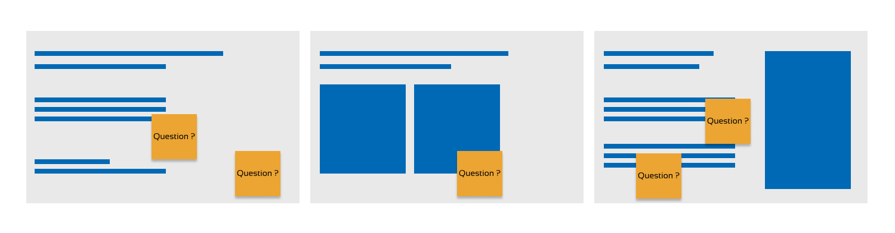
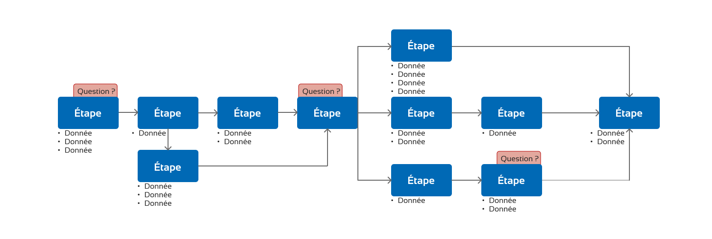
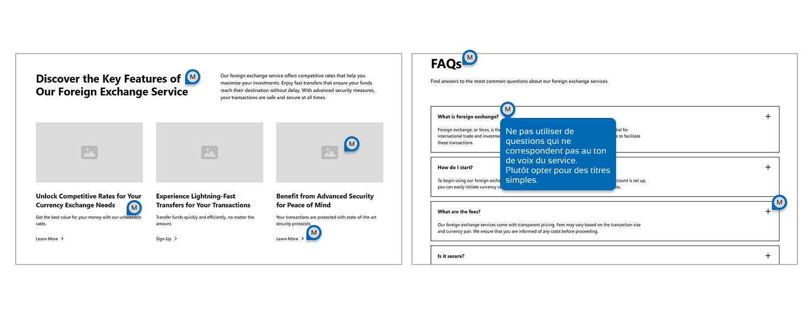
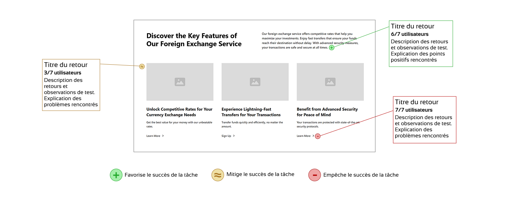

SG Markets
Product design Banque d'investissementPour répondre aux changements rapides sur les marchés financiers, la Société Générale a travaillé à la mise en place de SG Markets, une plateforme permettant aux entreprises et aux métiers internes d'accéder à une palette de services destinés à faciliter les processus dans des domaines variés. Être designer au sein des équipes projet de la Société Générale implique un rôle clé dans la collaboration avec le Product Owner, le développeur analyste et parfois un représentant métier. Mon objectif principal est de garantir une vision alignée et partagée du service à concevoir. Il est à noter que, dans ce cadre, le Product Owner réalise la recherche initiale, qui constitue le point de départ du travail de conception.
Comment accompagner la conception de services financiers en prenant en compte la complexité et la technicité du secteur ?
1. Contextualisation et alignement de la vision
Après réception des documents de cadrage remplis par le Product Owner, je les analyse pour en extraire les éléments essentiels. Avant de démarrer tout travail de conception, j'organise un premier atelier d'expression des besoins pour clarifier la vision du projet. Lors de cet atelier, j'invite le Product Owner à exposer sa vision et les objectifs du service. Pour structurer nos discussions, j'affiche les documents de cadrage dans un espace de travail collaboratif (type Miro ou FigJam), sur lesquels j’ai ajouté au préalable des post-it mettant en avant les éléments à questionner.
Cette première session est essentielle pour s’assurer que toute l'équipe partage la même vision de base. Elle me permet également de construire un planning indicatif structurant les différentes phases de travail.
2. Approfondissement des parcours utilisateurs
Le secteur financier implique des parcours utilisateurs souvent complexes, avec des profils aux droits et aux niveaux d’expertise variés pour un même service.
Sur la base des personae et des discussions initiales, je conçois un premier parcours utilisateur qui servira de référence pour des ateliers dédiés. De manière itérative, ce parcours sera ensuite affiné par les discussions et l’analyse de chaque étape. Pour chacune d’elles, je mets en exergue les questions à clarifier ainsi que l’ensemble des données à afficher ou à entrer par l’utilisateur.
Une fois validé, je procède à un regroupement des étapes en fonctionnalités clés du service. J'utilise ces éléments pour effectuer un benchmark interne et externe afin de faire émerger des pistes de travail pour les interfaces.
3. Co-design des wireframes
C’est dans une pure logique de stimulus-réponse que j’oriente la phase de wireframes. À travers différents ateliers, les wireframes sont examinés, et l’ensemble des retours est débattu et pris en considération. L’objectif est toujours de s’assurer que la vision produit est respectée et qu’aucun angle mort pouvant nuire à la qualité de l’expérience ne subsiste.
Il n’est pas nécessaire d’attendre que l’ensemble des wireframes soit terminé. Dès qu’une base suffisante existe pour permettre des échanges et une projection dans le parcours, un atelier peut avoir lieu. Cela permet de gérer progressivement les retours et d’anticiper la suite du wireframing, sans se retrouver confronté à une montagne de retours sur l’ensemble du parcours. De plus, l'équipe projet suit la progression et n’est pas laissée dans le flou en attendant que tous les wireframes soient prêts.
En laissant le temps aux échanges lors de cette phase, les zones d’ombre et dernières incompréhensions disparaissent, ce qui permet d’accélérer la phase de prototypage et d’assurer une expérience fluide et sans surprise, d’autant plus si un Design System est établi.
4. Prototypage et tests utilisateurs
Le travail approfondi sur les wireframes me permet d'accélérer la phase de prototypage. Sur le même modèle que la phase de wireframes, je présente progressivement les prototypes à l'équipe projet pour validation avant de les tester avec des utilisateurs.
Le Product Owner constitue un panel de testeurs, et j'élabore un protocole de test pour assurer la pertinence des retours. Chaque test donne lieu à un rapport visuel incluant des annotations sur les points d'amélioration, classés par niveau de gravité.
J'organise par la suite un atelier de priorisation pour déterminer les ajustements à apporter avant le développement.
5. Spécification, suivi du développement et monitoring
La validation finale des prototypes marque la fin du travail de conception. Il reste toutefois essentiel de bien spécifier les interfaces pour faciliter la phase de développement. Durant cette phase, le designer ne disparaît pas ! J’organise des revues hebdomadaires pour accompagner le travail de développement.
En parallèle, je mets en place un atelier spécifique pour définir les KPIs et les points de mesure permettant de suivre les performances du service.
Conclusion
La conception de services financiers implique de naviguer dans un environnement complexe et technique. Pour assurer le bon déroulement d’un projet, il est essentiel d'adopter une approche structurée et itérative, en impliquant étroitement les parties prenantes dès les premières phases.
L’alignement des visions, la modélisation approfondie des parcours utilisateurs et la conception collaborative des interfaces sont les ingrédients clés d’une expérience qualitative répondant aux besoins des utilisateurs. L'implication continue du designer, du cadrage à la mise en production, garantit une adaptation constante aux contraintes métiers et aux attentes des utilisateurs.